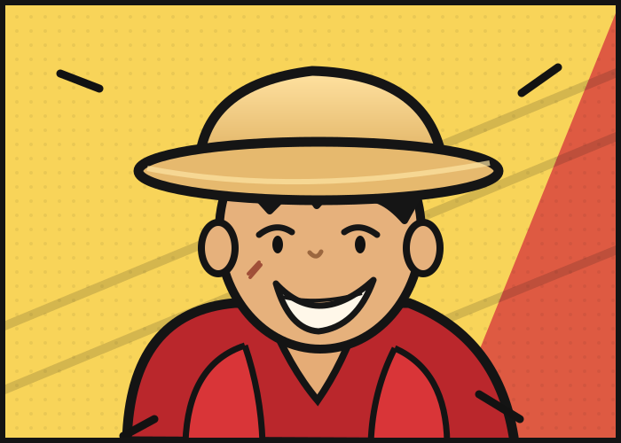

01
EDUCATION / AHMEDABADSCHOOL YEARSSheth C. N.
Sheth C. N.
Vidyalaya
Secondary and higher secondary school. The place where learning widely became a habit.

HELLO, I'M KATHAN RAJ.
Product manager by practice. Engineer by training. Curious about what AI makes possible.
FOLLOW THE THREAD ↘I work where product decisions meet complicated systems: APIs, data quality, operations and analytics. The useful part is rarely one feature. It is how the pieces work together for people.
pull the thread ↘Corporate clients use different accounting, expense and invoice systems. The exchange gives those systems a consistent way to connect with Amex capabilities.
PRODUCT FOCUS · CONNECTIVITY AND DELIVERY ACROSS TEAMSThere was no shared issue-management framework. I helped build one, then used root-cause analysis and repeatable response to stop the same problems returning. I also worked on data profiling and checks across 70K+ files.
Group similar issues, identify the root cause, and make the next response consistent across teams.
*50–60% reduction over one year. Figures from Kathan's work history. The case files show illustrative signals, not company records.
A marketplace price changes. First the system flags the product; in a later phase it suggests a competitive price for a pricing manager to review and approve.
The first view compares a product with its marketplace reference.
I combined problem definition and delivery of a Python-based analytics solution.
+40% anomaly detection−80% manual effortI read, test, and build with AI. An engineering foundation and an MBA help me ask what a system should do before choosing how to build it.
Exploring how connected information can improve retrieval and context in AI systems.
Independent explorations, separate from employer work. The dashboard is a private AI-assisted build taken from architecture through development.
Computer engineering taught me how systems work. An MBA in Operations brought the people and process lens. The work since then has asked me to use both.
Secondary and higher secondary school. The place where learning widely became a habit.
B.E. in Computer Engineering. I became more interested in how systems fit together than in any one screen.

MBA in Operations at the Symbiosis Infotech Campus. I added business, delivery and people to the technical lens.

Senior Consultant, Analytics. I worked on Walmart Canada pricing, turning marketplace changes into signals a pricing manager could act on.
Associate, Product Management. I helped establish issue-management and data-quality practices across complex operations.
Senior Associate, Product Management. ERP connections, commercial APIs and the foundations that make information more useful.
Campus postcard artwork supplied by Kathan. The illustrated buildings are visual memories, not documentary photographs.
The same curiosity has a lot more places to go.
I found fitness in college, then a knee injury in 2020 interrupted it. Coming back made movement more personal: running, dance, yoga, boxing, pickleball and badminton. Tennis is the new challenge. Finishing the Vedanta Delhi Half Marathon is a milestone I carry with me.
Living away from home made me value it differently. Food documentaries drew me into where dishes come from and why they matter. Gujarat's street food, Navratri and Uttarayan carry that feeling home.
A crisp street-food favourite, especially when the city is celebrating.

FREEDOMOne Piece led me into anime and remains my favourite. Luffy's joy and freedom speak to me; sometimes I recognize Zoro's serious side, too. I love the animation around Zenitsu in Demon Slayer, and I enjoy American cartoons like Rick and Morty.
PAGE 01 / 02I read, follow new technology and keep exploring how ideas connect.
For product conversations, ideas, or a good question: get in touch.